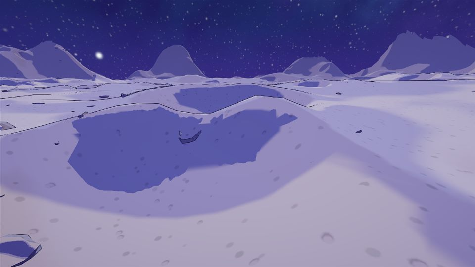
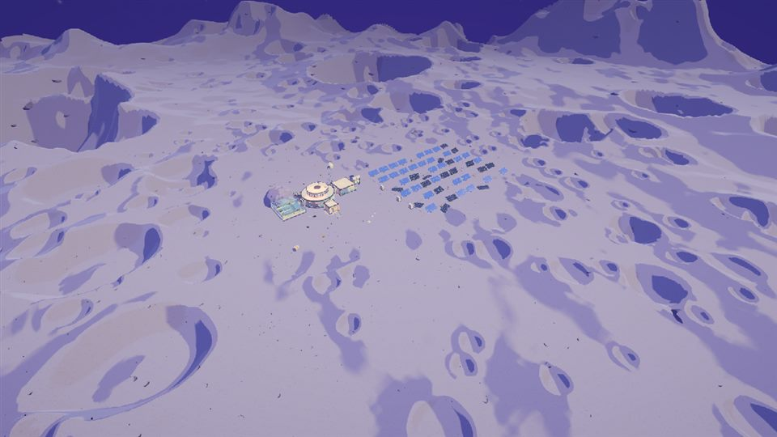
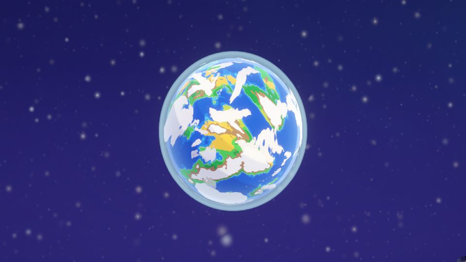
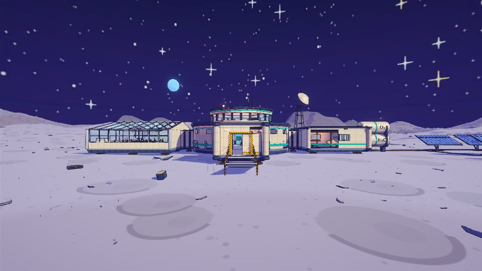
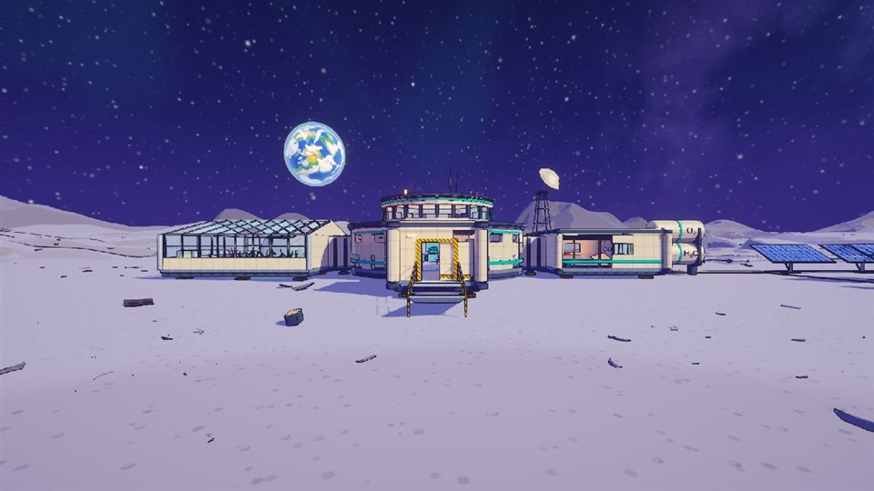
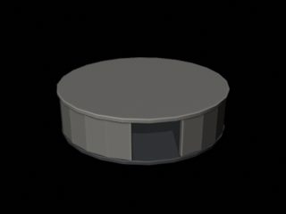
Cilindro baixo com chanfro: forma limpa e lê bem como módulo. 84 arestas não-manifold (peças sobrepostas sem soldar) e 4 n-gons nas tampas. Falta detalhe de silhueta (escotilhas, antenas, frisos), e a parede é lisa demais para o estilo cartoon.
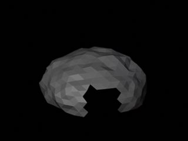
Cúpula de regolito facetada (1684 tris, sem suavização perceptível): parece uma pedra amassada, não sacos de areia. Base enterrada 0,6 m. Sugestão: refazer com sacos arredondados empilhados (instâncias) ou uma casca suave com relevo.
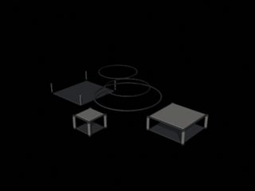
Frisos e molduras externas: cumprem o papel de quebrar as paredes. 480 arestas não-manifold e 56 n-gons (peças finas abertas). Muitos frisos têm 2 cm de espessura e somem à distância.
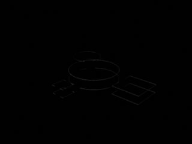
Rodapés e frisos internos: boa ideia de acabamento. 596 arestas não-manifold (faixas abertas, sem tampa). Ok para o jogo; só vale soldar e dar espessura mínima de 5 cm.
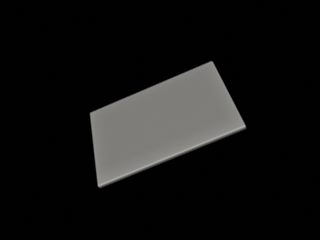
Uma placa de 6 faces: não parece pedaço de prato de antena (deveria ser um gomo curvo do prato). Fica claramente 'genérico'.
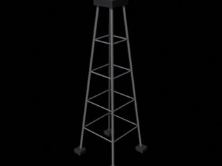
Treliça bem proporcionada (10,4 m), lê bem de longe e combina com o cartoon. 40 n-gons nas tampas dos tubos (inofensivo). Poderia ter escada e luz de topo piscando.
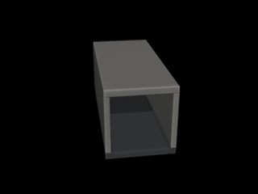
Caixa aberta de 84 tris: túnel sem nervuras, juntas ou janelas. Funciona como colisão, mas visualmente é o objeto mais 'blockout' da base.
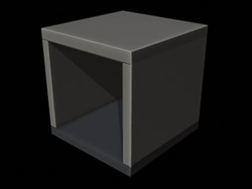
Mesma caixa simples dos outros corredores (84 tris). Sem detalhe externo; 4 arestas abertas nas pontas.
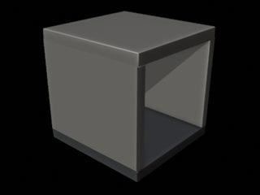
Idem: corredor caixote. Sugestão para todos: perfil arredondado/octogonal com anéis de reforço (as Corredores_Costelas ajudam pouco).
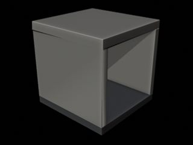
Idem aos demais corredores.
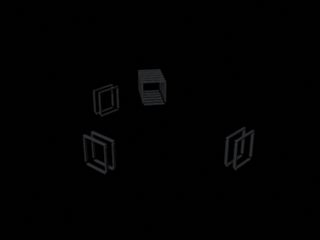
Anéis de reforço dos corredores: bom detalhe de ritmo, geometria limpa (0 n-gons, 0 erros). Pouco visíveis por serem finos e da mesma cor do casco.
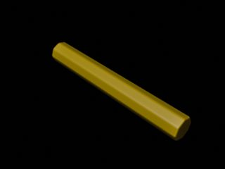
Cilindro de 28 tris (8 lados) — cano solto. Silhueta octogonal aparece com o contorno cartoon; 2 n-gons nas tampas.
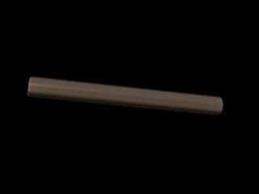
Cano enferrujado simples. Mesmas observações do Detrito_00.
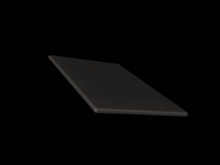
Placa de 5 cm (12 tris): lê como papel. Detritos de casco ficariam melhores dobrados/amassados.
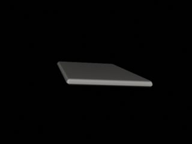
Placa fina genérica.
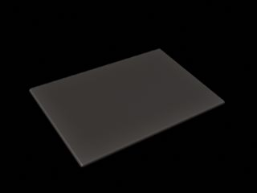
Placa queimada genérica, fina demais.
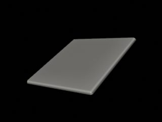
Placa fina genérica.
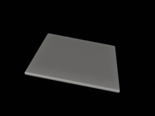
Placa fina genérica.
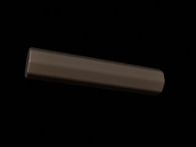
Cano enferrujado simples (8 lados).
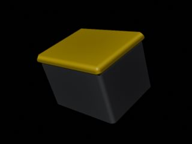
Caixa/container pequeno com tampa amarela: forma legível, boa cor. Chanfro ajuda.
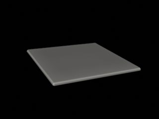
Placa fina; flutua 2 cm acima do chão.
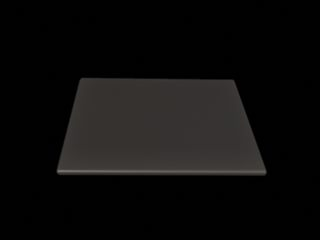
Placa fina genérica.
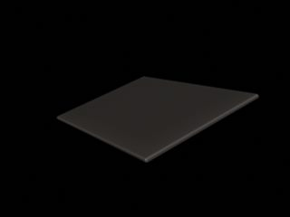
Placa fina genérica; afundada 24 cm em um lado.
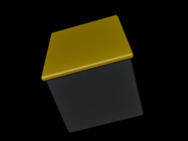
Caixa com tampa: ok.
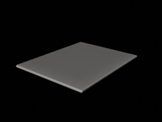
Placa fina; flutua 3 cm.
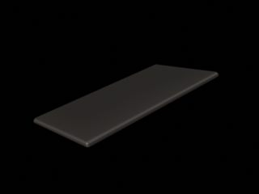
Placa fina genérica.
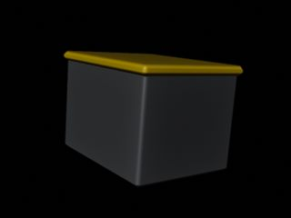
Caixa com tampa: ok.
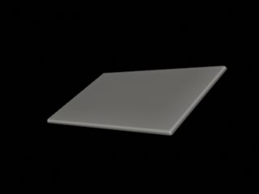
Placa fina; afundada 24 cm.
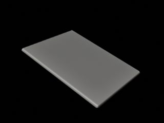
Placa fina genérica.
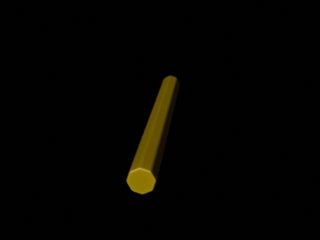
Cano amarelo de 3 m, 8 lados.
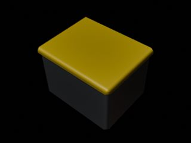
Caixa pequena: ok.
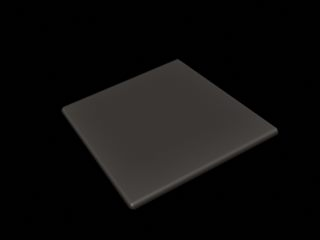
Placa fina genérica.
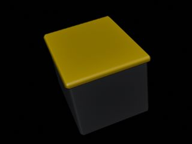
Caixa com tampa: ok.
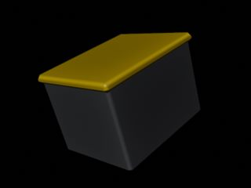
Caixa com tampa: ok.
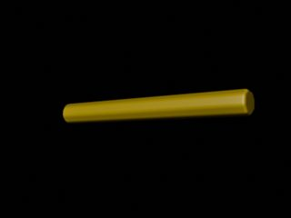
Cano amarelo simples.
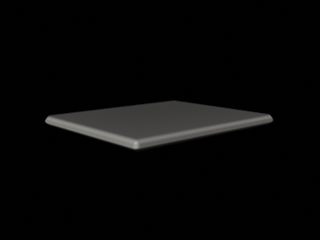
Placa fina genérica.
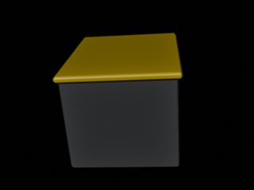
Caixa com tampa: ok.
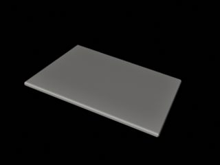
Placa fina genérica.
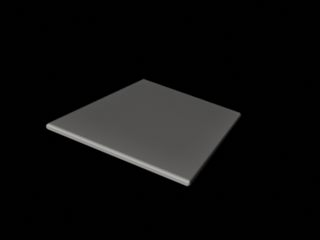
Placa fina genérica.
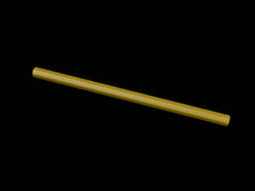
Cano amarelo de 3 m, 8 lados.
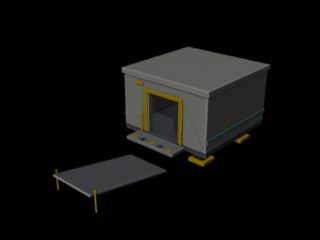
Módulo da eclusa com rampa e porta: proporções boas, leitura clara da entrada (faixas amarelas). 8 n-gons, 8 arestas abertas. Falta luz de sinalização na porta.
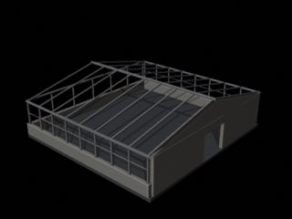
Estrutura da estufa em treliça: o objeto mais rico da base, lê muito bem no cartoon. 9 arestas abertas.
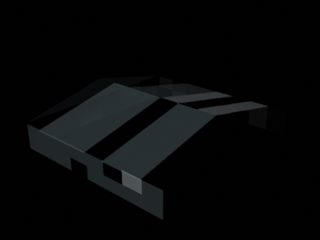
Vidros da estufa: 87 arestas abertas (planos soltos, esperado em vidro). Faltam caixilhos em algumas águas do telhado.
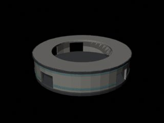
Casco do Hub (3298 tris): forma central forte. 1302 arestas não-manifold — muitas peças encostadas sem solda; pode causar frestas de luz e sombra. A brecha (placa queimada) é só uma textura plana.
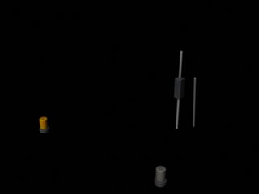
Mastros e farol: finos (8 cm), quase somem; o farol é pequeno para ser o 'marco' da base. Flutua 7,6 m (correto: está no teto).
Torre do Hub com janelas: boa silhueta de 'cabine'. 288 arestas abertas e 4 n-gons.
Anel de vidro da torre: 68 arestas abertas (planos), ok para vidro.
Mobília do abrigo (beliches/armários): escala correta para jogador de 1,80 m; peças muito quadradas.
Interior da eclusa (bancos, trajes, painel): boa narrativa visual. 12 n-gons.
Canteiros e plantas: as plantas são palitos (poucas faces) e leem como gravetos mesmo vivas. 70 n-gons.
Mesa, cadeiras, consoles, beliche: composição boa. 16 n-gons. Fios da brecha flutuando soltos.
Corrimãos e equipamentos: bem distribuídos. 20 n-gons.
Painel solar (x31, mesma forma): limpo, bom contraste azul. 2 n-gons. Repetição de 31 cópias idênticas ok para usina.
Porta-placa com visor e faixa: simples mas legível. Sem batente/maçaneta.
Porta-placa com trava: ok.
Cápsula de referência de escala (não vai para o jogo): correta, 1,80 m. 32 arestas abertas e 2 n-gons, irrelevante.
Prato de antena em anéis (420 tris): forma boa; o gomo faltando comunica bem o 'quebrado'. Flutua 9,8 m (está no topo da torre, correto).
Caixa de 12 faces com faixa: genérica demais para uma peça importante da missão. Sugestão: bancos de células visíveis, cabos, display.
Rótulo (+/−): 64 arestas não-manifold e 32 vértices duplicados — texto convertido sem soldar.
Cano solto do tanque: comunica bem 'desconectado'. 8 lados; 2 n-gons.
Cápsula tombada: leitura boa, mas cilindro de 16 lados facetado e 4 n-gons; afundada 26 cm (intencional?).
4 terminais com telas: legível, escala certa.
Caixa com tela: muito simples para ponto de interação.
Gerador com portinhola aberta: bom storytelling. 6 n-gons.
Texto 'O2': 1136 arestas não-manifold e 568 vértices duplicados (curva convertida sem soldar). Funciona visualmente, mas é sujeira de malha.
Gabinete simples e limpo (48 tris), lê bem.
Igual ao 1 com portinhola aberta: boa variação de dano.
Igual ao 1.
Painel caído: bom. Afundado 53 cm em uma ponta (pode ser intencional).
Painel rachado: as rachaduras são geometria (bom).
Painel caído: ok.
Suporte sem painel: comunica bem a peça faltando.
Painel caído, afundado 76 cm na ponta.
Painel rachado: ok.
Suporte vazio: ok.
Suporte vazio: ok.
Painel rachado: ok.
Painel rachado: ok.
Painel rachado: ok.
Painel rachado: ok.
Painel rachado: ok.
Suporte vazio: ok.
Painel rachado: ok.
Painel caído: ok.
Painel rachado: ok.
Painel caído: ok.
Painel rachado: ok.
Painel caído: ok.
Painel rachado: ok.
Suporte vazio: ok.
Painel rachado: ok.
Reciclador com tanque de vidro e colunas: bonito e legível.
Texto 'H2O': 1184 arestas não-manifold e 592 vértices duplicados.
Corrimãos da rampa: finos e retos; 8 n-gons.
Rocha (x366): 76 tris, facetada; fundo aberto (22 arestas). Afundada 0,9 m (ok, esconde o fundo).
Rocha achatada (x348): 73 tris.
Seixo (x388): 78 tris.
Rocha (x343): 77 tris.
Rocha (x353): 77 tris.
Rocha (x332): 78 tris. Geral: só 6 formas para 2130 rochas — a repetição aparece; para cartoon, rochas mais arredondadas e com 2–3 tons ficariam melhores.
Casco do suporte de vida com janelas: boa forma. 16 arestas abertas.
Texto: 1184 arestas não-manifold e 592 vértices duplicados.
Texto: 1136 arestas não-manifold e 568 vértices duplicados.
Tanques com radiador e canos: um dos melhores objetos — volumes claros e bom detalhe. 14 n-gons.
Cabos da usina (88 m): retos sobre um chão ondulado, então alternam entre flutuar e afundar. Sugestão: projetar no terreno.
Grade de 365x365 (passo 4 m, 208 mil tris): resolução grossa demais para crateras — por isso eram só desenho. Bordas abertas (normal em terreno).
✔ Refeito nesta etapa (veja o topo).
Esfera lisa de 180 m com cor única: pequena no céu e sem continentes/nuvens/atmosfera.
✔ Refeito nesta etapa (veja o topo).
Métricas: tris = triângulos sem modificadores · folga do chão = distância entre a base do objeto e o terreno (negativo = enterrado) · borda vermelha = nota 2, amarela = 3, verde = 4.